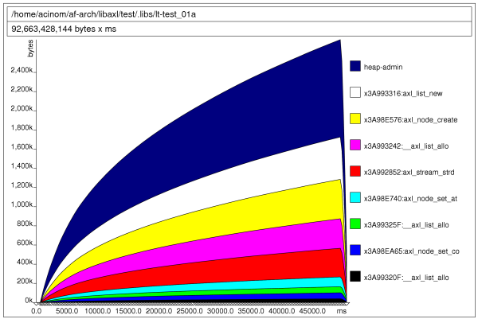
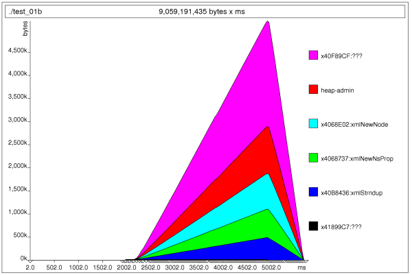
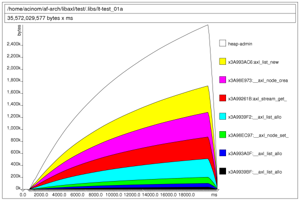
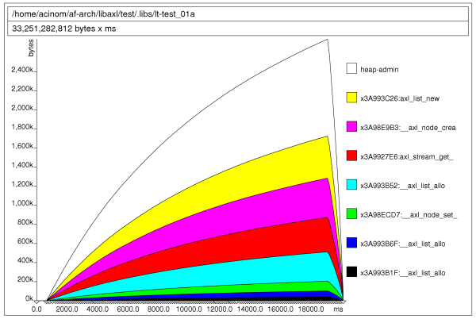
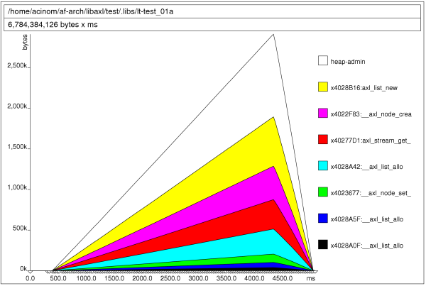

|  |
 Axl memory usage report, evolution until 0.2.1
Axl memory usage report, evolution until 0.2.1
1. Introduction
The following information was gathered through several modifications performed to the LibAxl library, using a machine with a Intel(R) Pentium(R) 4. This report covers the memory profile that the library has and compares that result with the LibXML library.
In also contains a brief about improvements done to the library to reduce execution time, while supporting the same features.
It is in no way a complete library comparison at all, but provides some useful information about the motivations for building LibAxl library and how basic features compares to LibXML.
The implementation reference chosen was LibXML-2.0 mainly because it is the one being used until now within the Af-Arch and the Vortex Library projects.
To produce the memory profiling results used on this report it was used the valgrind tool and its extension to profile heap allocation and memory performance, called massif. It was also used callgrind tool which gives statistical performance information.
The test used for this memory usage report was the following for the case of Axl library results:
#include#include int main (int argc, char ** argv) { axlError ** error; /* top level definitions */ axlDoc * doc = NULL; /* initialize axl library */ if (! axl_init ()) { printf ("Unable to initialize Axl library\n"); return -1; } /* get current doc reference */ doc = axl_doc_parse_from_file ("large.xml", error); if (doc == NULL) return AXL_FALSE; /* cleanup axl library */ axl_end (); /* release the document */ axl_doc_free (doc); return AXL_TRUE; }
For the performance results get for the LibXML-2.0 library, the test code was:
#include#include int main (int argc, char ** argv) { xmlDocPtr doc; /* init libXml */ LIBXML_TEST_VERSION /* load the document */ doc = xmlParseFile ("large.xml"); if (doc == NULL) { printf ("Failed to load the xml document.\n"); return -1; } /* release memory */ xmlFreeDoc (doc); xmlCleanupParser(); return 0; }
The xml file used is a glade file definition that is 650K sized approx.
Test was run using the following command to get memory usage:
bash: ~$ valgrind --leak-check --show-reachable=yes ./test_file
The following command was used to get the memory profiling information for both libraries.
bash: ~$ valgrind --tool=massif ./test_file
Conventions used on this report to identify memory allocations, memory deallocations and total amount of memory used are the following:
(A) = allocations (F) = deallocations (T) = total amount (bytes)
2. Initial status
Once the library reached its base features, XML parsing and DTD validation for a enough big validation data set, initial report to get current memory usage and memory consumption for the Axl Library without any modification was the following:
 Memory consumption for this initial state is was:(A) 273629 (F) 273629 (T) 3554854
Doing the same test to the total amount of memory used by LibXML to parse and release the same file, results was:
(A) 127809 (F) 127809 (T) 4201579
Being its memory profile the following graphic:
As starting point conclusion we have found the following issues to be considered:
- LibXML is an implementation that is unbelievable fast. At the moment this report was generated, we can ensure it could be the faster xml parser available today.
- Initial profiling results shows that Axl library is slower than LibXML, but, its memory consumption is lower.
- The "head-admin" limit shows how many administration
memory blocks was allocated to control the memory required by the
program. When a program request memory, an admin block is associated
to it (for memory administration purposes).
The graphic shows that LibAxl requires more heap admin blocks than LibXML. This is not a good symptom (explained below).
Previous graphs shows that LibAxl library allocates less memory but with more small operations than LibXML. This is not good because allocating several small pieces of memory is more inefficient than allocation fewer but bigger, mainly because it is required, for the same total amount of memory allocated, more administration memory ("heap-admin").
3. Improving the library memory efficiency
Before seeing this results, it was applied a modification to the library to avoid double allocations/deallocations, produced by functions that were receiving a chunk already allocated, and then making another copy.
Before applying this initial patch, results was the following:
(A) 212650 (F) 212650 (T) 3123296
Now the library perform, for the same task, supporting the same features, up to 60000 fewer allocations/deallocations operations, consuming around 3,1 megabytes.
After analyze current implementation it was detected that some function, especially axl_stream_get_until was allocating memory that was returned as a reference that could be usable from the user space, but the axl stream implementation was forcing the user space to perform a new allocation to get a copy.
After modifying the library, adding a new API to allow the axl stream to nullify the reference returned so the user space could be the only owner for the memory returned.
New test results was:
(A) 199962 (F) 199962 (T) 3014631
On this case, memory usage improvement was not so great.
Then a new change was applied to the axl_stream_get_until function, which was creating an array, to iterate the chunk set to match, to later free it. After making the library to create for each stream this structured and deallocate it once the stream is destroyed, results got was:
(A) 139088 (F) 139088 (T) 1937471
The change applied was really great, now the library was under the 2 megabyte limit and memory pairs produced was similar to the LibXML library.
However, the heap-admin is still proportional bigger than the useful memory allocated (in fact is the bigger memory segment producing memory allocations).
4. Speeding up library execution time
We have observer how the library execution time have evolved from its initial measures (45000ms >>) to (16000ms >>)). This improvement is mainly based on the concept that requiring memory from the kernel makes the program slower.
Common causes making a program to be more slower as it requires more memory are the following:
- Requiring memory from the system, without using a memory cache
system or an object cache system, makes the system really
inefficient because malloc operations are extremely
inefficient.
[Attardi, Nadgir] shows us how this memory allocator works compared with several memory allocators, and it keeps on getting worst if the program is multi-thread.
- The more memory requires a program the bigger are the
probabilities of being sent (the entire or) some segment of the
program pages to the swap memory, causing strong delays.
This shows us that a program should consume as low memory as possible, improving the overall system performance.
So, at this pointer we could say that memory consumption could be improved (yes, even more!!) but now it is time to focus on timing issues.
We started with some initial measures using the time command to check how fast were both test and here was the initial results:
test_01a (axl): 0.637ms test_01b (xml): 0.047ms
Wow!! Ok, this is not a surprise, we have stated at the begin of this report that the LibXML library was really efficient doing its job.
We started to use callgrind tool to check were was inverted cpu time while running axl test and we found several issues. Here is a list of improvements and its associated time:
- After making some function to not call several times to strlen,
but cache those values to be used not only in the function itself but
all functions called from it:
[0.600ms] - After making inspect several to not calculate every time chunk
lengths, but cache those lengths to be used over and over again:
[0.565ms] - After making get until function to not compare with white space strings:
[0.435ms] - After avoiding calling to getenv from axl_log_is_enabled, and
make the first call to be cached:
[0.262ms!!!]
We have to say here that this wasn't expected. A simple call to the system call getenv was causing the overall system to have a performance impact of 200ms!!! - After rewriting AXL_CONSUME_SPACES to have an efficient implementation:
[0.116ms!!!]
Well, at this point we have to say that things started to get interesting.
- After making a function, from inside the axl node module, to not call to
initialize an internal list when it is known that the function will do nothing:
[0.106!!!]
The result was that, before making some investigation, the library was performing its job, passing all its validation test but doing it 6 times faster than before!!.
To summarize both results, memory and execution time improvements, here is the memory profile result:
 4. Conclusion
This reports shows initial state of the XML 1.0 implementation and how it was modified to get better performance results.
These results was mainly compared with LibXML because it is an implementation reference, it is really fast doing its job and was the library being used by internal projects at ASPL.
At the end, before doing all modifications, the LibAxl library is really efficient while using memory and can be better. A final comparison is the following:
LibAxl: (A) 139088 (F) 139088 (T) 1937471 LibXML: (A) 127809 (F) 127809 (T) 4201579
It also shows how the LibXML is still faster than LibAxl for XML parsing functions. This could be improved as memory consumption is improved and the new object cache system [Bonwick] is deployed into the LibAxl.
test_01a (axl): 0.106ms test_01b (xml): 0.047ms
6. References
- [Bonwick] The Slab Allocator: An Object-Caching Kernel Memory Allocator
- [Attardi, Nadgir] A comparison of Memory Allocators in Multiprocessors.
- Valgrind Homepage for this profiling tool and its extensions.
- LibXML LibXML homepage, tutorials, references and manuals.